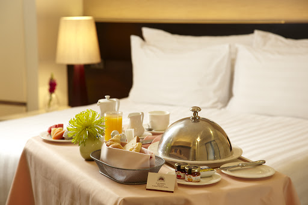
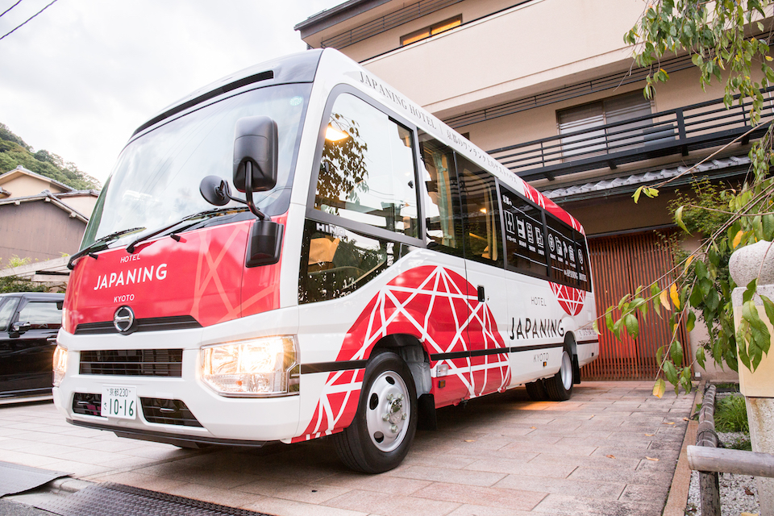

Breakfast
The hotel restaurant with both indoor and outdoor seating offers an open-buffet breakfast and is directly accessible from guestroom corridors.
Room Service
Urban Hotel Kyoto Holiday Home & Suites provides 24-hour room service. Please click here for Room Service menu.
Internet Access
Urban Hotel Kyoto Holiday Home & Suites offers free Internet access. High-speed wireless Internet connection is complimentary both in the rooms and public areas..

|
|
|---|---|
|  | |
|  |
Business Centre
Urban Hotel Kyoto Holiday Home & Suites provides significant services for a flawless business-travel experience. The hotel's business centre is designated to meet all your business travel needs and available to assist you with all office services such as scanning and emailing documents, fax services, photocopying, printing and offices supplies..
Free Shuttle Service
The accommodating hotel guests can benefit of free shuttle service provided by Urban Hotel Kyoto Shopping & Entertainment World based on availability. Please click here for free shuttle bus hours and destinations..
Parking
Urban Hotel Kyoto Holiday Home & Suites offers 24-hour indoor parking for its guests. The hotel is directly accessible from the indoor car park and guests can easily reach the shopping mall by using the elevators that are facing the car park hotel entrance. The indoor parking and valet services are free for accommodating hotel guests. Car washing service is also available with an additional cost.